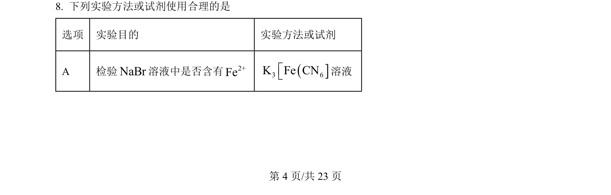
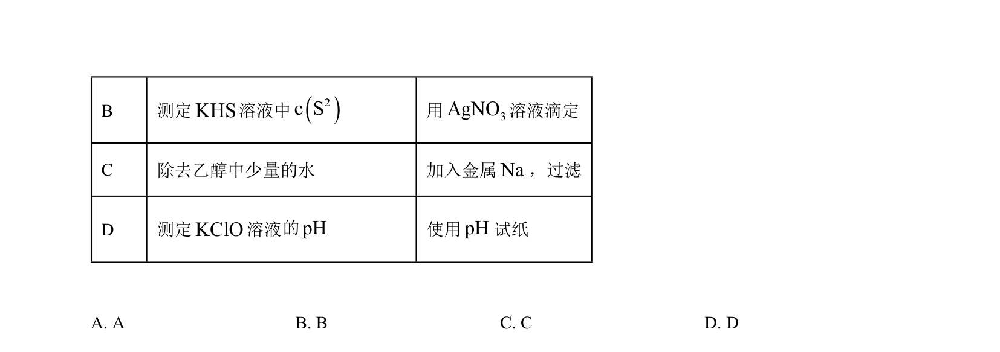
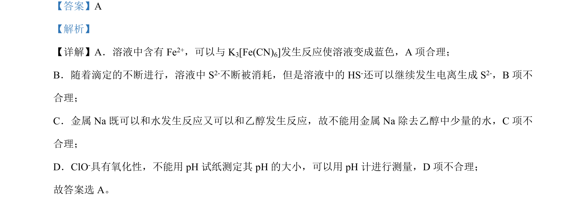

考点：Fe²⁺的检验 弱酸电离平衡 钠的化学性质 氧化性物质pH测定
Fe²⁺的检验
弱酸电离平衡
钠的化学性质
氧化性物质pH测定


本题考查Fe²⁺检验、硫化物电离平衡、钠的性质及pH测定方法等实验操作正误判断。

📄 原 PDF 第 4 页：素材/真题/吉林/2008-2024·（吉林）化学高考真题/2024年高考化学试卷（辽宁）（解析卷）.pdf
素材/真题/吉林/2008-2024·（吉林）化学高考真题/2024年高考化学试卷（辽宁）（解析卷）.pdf